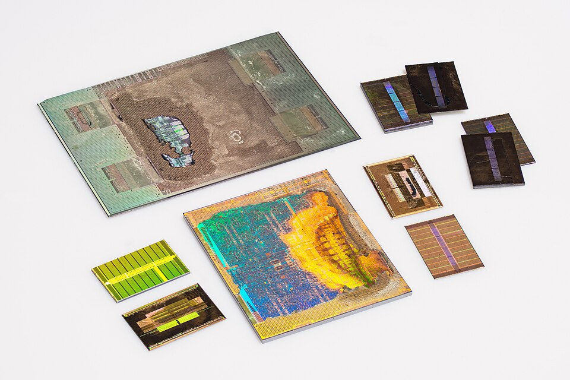
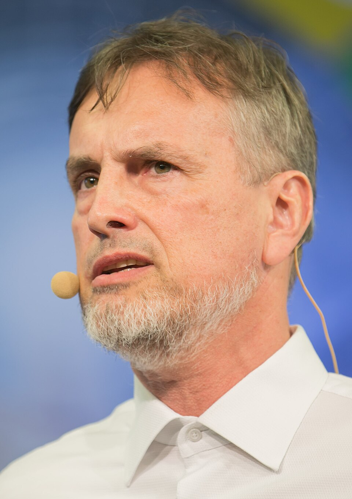
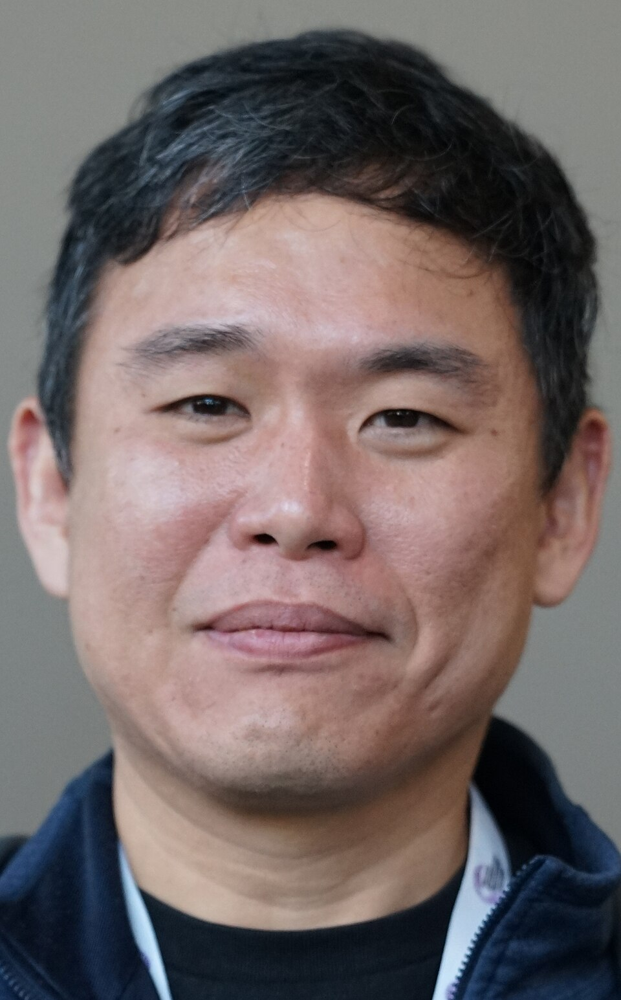
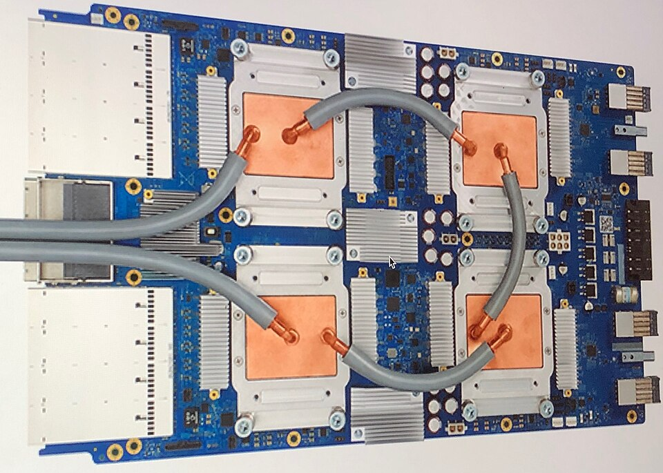
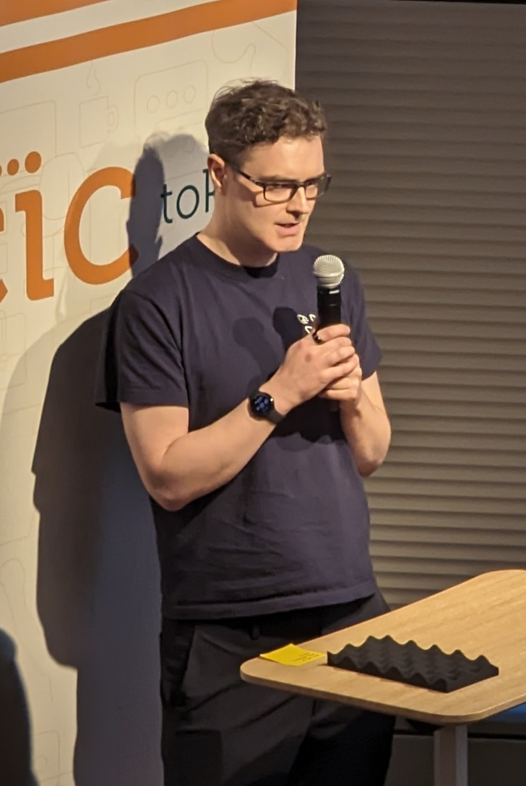
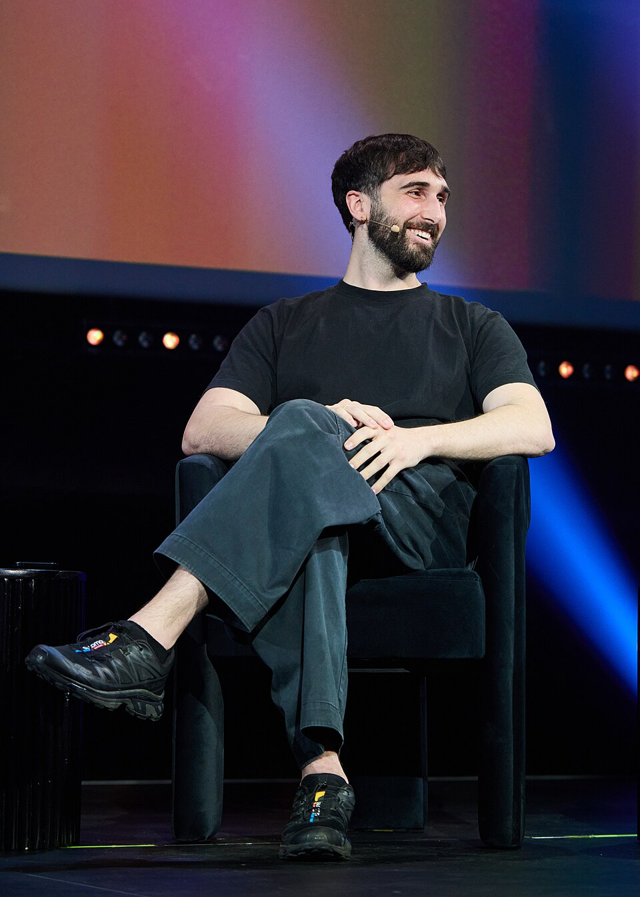
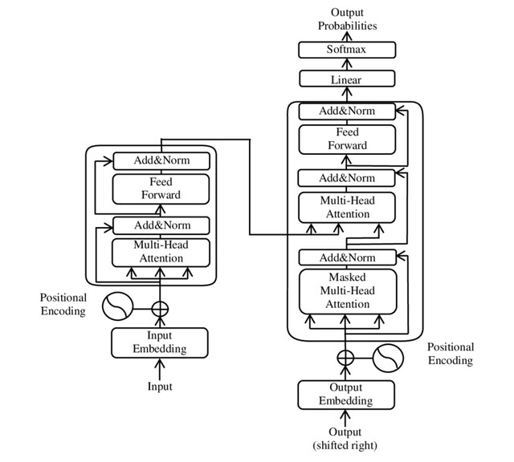
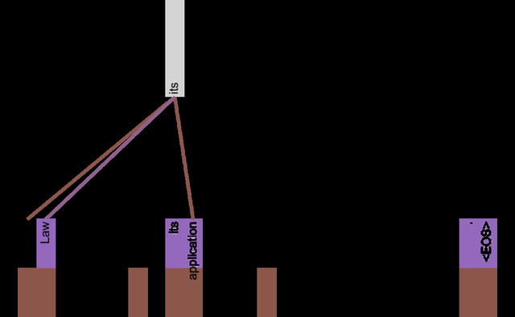

2017: Attention is All You Need
De 1997 a 2018, em ordem e com as pessoas. A AlexNet olha a imagem inteira de uma vez, e a placa gosta disso. Texto é uma fila de palavras. Por vinte anos a rede leu em fila, uma palavra por passo; em 2017, oito pessoas tiraram a fila. Um software desenhado com a forma do hardware. Quando o áudio pedir, aperte Próximo.
A mesa de reunião. Na fila, cada palavra passa um bilhete pra seguinte, e o bilhete vai se apagando pelo caminho. Na atenção, todas as palavras sentam na mesma mesa redonda, ao mesmo tempo, e cada uma olha pra todas as outras e decide quem escutar. O crachá com o número da cadeira é o carimbo de posição.

Memória de curto e longo prazo
Um algoritmo em fila não aproveita a placa, que quer tudo ao mesmo tempo. Em 1997 isso não importava; em 2012 passa a ser o problema.

Traduzir com duas filas
O software encontrou um limite de memória dentro do próprio desenho, não no hardware. A saída vai ser mudar o desenho.

A atenção
O software contornou o gargalo com mais conta em paralelo, que é o que a placa faz bem. Mas a leitura ainda é em fila.


Hardware sob medida

Em setembro de 2016 o Google põe um tradutor neural em produção; em novembro, oito línguas. Oito camadas de LSTM lendo, oito escrevendo, atenção no meio: seis dias em 96 placas pra treinar. E um chip próprio pra rodar: a TPU, uma grade de 256×256 multiplicadores.
Atenção é tudo de que você precisa
Se todas as palavras são processadas ao mesmo tempo, o trabalho inteiro vira multiplicar tabelas, a conta da placa e da TPU. O software foi desenhado com a forma do hardware.


O carimbo de posição

Cada palavra vira uma lista de centenas de números, também aprendida: "gato" e "cachorro" ficam perto; "gato" e "imposto", longe. Sem fila, a rede não sabe qual palavra veio primeiro. A solução: somar a cada palavra um carimbo de posição, que só depende do lugar dela na frase.
Três multiplicações de tabela

De cada palavra saem três listas: a pergunta, a etiqueta e o conteúdo. Comparar a pergunta de uma com a etiqueta de outra dá um número: quanto escutar. Todos os pares de uma vez, pesos que somam um, e cada palavra recebe a soma dos conteúdos pesados.
GPT e BERT
O que decide o tamanho do modelo é quantas placas se tem e por quanto tempo. O software virou receita; o ingrediente é hardware.
A receita cresce

65 milhões de botões em 2017; 117 milhões em 2018; 1,5 bilhão em 2019; 175 bilhões em 2020. A mesma peça; o que muda é a quantidade de texto e de placa. A corrida recomeça em outra escala: milhares de placas de uma vez, e a NVIDIA vira a empresa mais valiosa da indústria.
Do ábaco ao botão da rede

Uma pedra numa canaleta. Engrenagens que carregam o vai-um. Boole: sim-e-não dá conta de qualquer lógica. Von Neumann põe o programa na memória. Transistor, chip, PC, rede, placa de jogo. A máquina de 2018 ainda é Boole mais Von Neumann mais um programa.
2018
Aqui fecha o arco da máquina, da pedra do ábaco ao programa que passou a ser achado. A máquina ainda é a mesma máquina. O que mudou de vez foi quem escreve o programa. A etapa 10 volta pra outra linha da mesma história, a da rede.